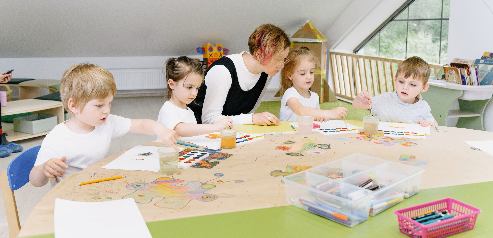

In authentic Montessori education, the physical environment empowers self-correction and natural movement. Every wash station, low open shelf, and learning material is built specifically to foster absolute child autonomy.
Organic botany gardens, native flora trails, and outdoor open work patios.
Dual-aspect expansive windows designed to foster natural calm and concentration.
Non-toxic, sustainable furnishings built strictly at child eye level and height.
Natural wool felt dampening and quiet contemplation nooks for focused discovery.
In Montessori, the environment acts as the third teacher — encouraging order, self-correction, and natural movement.
Low open shelving, accessible water stations, child-proportioned wooden tables, and personal floor mats empowering total independence.
Custom Ergonomic ShelvingRaised organic vegetable beds, composting stations, rain harvesting, and sensory herb gardens for hands-on botany lessons.
Organic Outdoor PlantingFloor-to-ceiling windows, non-toxic natural wood finishes, acoustic baffling, and calming color palettes to reduce sensory fatigue.
Sunlit Learning HubsEvery corner of Little Oak is purposefully prepared to invite child autonomy, deep focus, and joyful discovery.

Sun-drenched, multi-age classroom environments with orderly open low shelving, individual jute work rugs, and dedicated areas for Practical Life, Sensorial, Mathematics, and Language Arts.

Specialized expressive studios featuring clay and terracotta modeling benches, natural watercolor easels, acoustic music circles, and hands-on science microscopy stations for cosmic exploration.

An acre of living nature with raised organic vegetable beds, sensory lavender herb gardens, weather monitoring nooks, barefoot reflexology trails, and cedarwood balance beams for natural agility.

100% certified solid beechwood furnishings tailored to child proportions, authentic self-correcting Nienhuis materials, low reachable sinks, and calming quiet reflection alcoves with peace tables.
A safe, sanitized, and eco-conscious environment engineered for total family peace of mind and child wellness.

Biometric entry gates, 24/7 CCTV in public areas, and strict verified security PIN pickup procedures for complete peace of mind.
Verified Gate Security & CCTV
Hospital-grade HEPA air filtration systems, organic eco-cleaning products, and daily UV sanitization of learning materials.
HEPA Air Filtration & UV Sanitize
Direct room patio access enabling children to transition freely between concentrated indoor work and outdoor sensory play.
Direct Patio Access